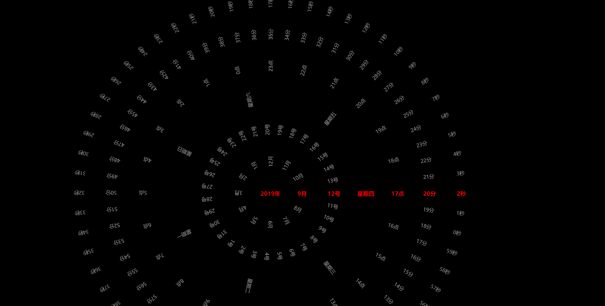
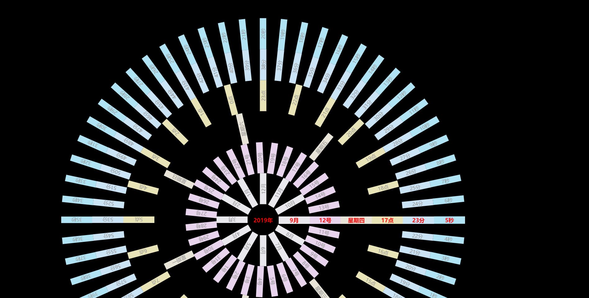

首先附上jq插件库，里面的东西太炫了，建议学前端的可以看看学习下：http://www.jq22.com/
里面有个“超个性动画版本的个人简历”，通过屏幕上不断打印内容，改变相应样式来实现动画简历，我从来没想到过还有这种操作；
再附上一个比较有趣的基于vue的圆形时钟：
<!DOCTYPE html>
<html>
<head>
<meta charset="UTF-8">
<title></title>
<script src="https://cdn.bootcss.com/vue/2.6.10/vue.min.js"></script>
<style>
*{
margin: 0;padding: 0;
}
body{
background-color: #000000;
}
/* transition（过渡），平滑过渡主要靠这个属性
语法：transition: property duration timing-function delay;
property（设置过渡效果的 CSS 属性的名称）
duration（完成过渡效果需要多少秒或毫秒）
function（速度效果的速度曲线）
delay（过渡效果何时开始）
*/
.sec,.min,.hou,.wee,.day,.mon,.yea{
position: absolute;
top: 700px;
left: 800px;
transition:transform 1s;
color: #999999;
text-align: center;
}
.nowTime,.yea{
color: #FF0000;
font-size: 18px;
font-weight: bold;
}
</style>
</head>
<body>
<!--
梳理一下几个点：
v-for(item,index) in num：
item是从1-num，index是从0-num-1，所以下面用到item和index的地方可以相互替换，只要别忘了+1-1
v-bind:calss：
给当前时间绑定样式，用于区别其他时间
想让当前时间始终处于最右边：
顺时针：逆时针旋转（num-当前时间）*度数
逆时针：顺时针旋转（当前时间）*度数
比如：nowTime:60-item==sec，就表示顺时针情况下，当前秒sec想处于最右边，就需要逆时针旋转item*度数
v-bind:style：
translate平移后，rotate旋转角度使之对准圆心
此处不涉及平滑过渡，在样式里：transition:transform 1s;
-->
<div id="app">
<div class="sec" style="width: 100px; "
v-for="(item,index) in 60"
v-bind:class="direct==0?{nowTime:60-item==sec}:{nowTime:item==sec}"
v-bind:style="direct==0?{transform:'translate('+xTrans(s_r,item+sec,60)+'px,'+yTrans(s_r,item+sec,60)+'px) rotate('+dTrans(item+sec,60)+'deg)'}:{transform:'translate('+xTrans(s_r,item-sec,60)+'px,'+yTrans(s_r,item-sec,60)+'px) rotate('+dTrans(item-sec-180,60)+'deg)'}">{{direct==0?60-item:item-1}}秒</div>
<div class="min" style="width: 100px; "
v-for="(item,index) in 60"
v-bind:class="direct==0?{nowTime:60-item==min}:{nowTime:item==min}"
v-bind:style="direct==0?{transform:'translate('+xTrans(i_r,item+min,60)+'px,'+yTrans(i_r,item+min,60)+'px) rotate('+dTrans(item+min,60)+'deg)'}:{transform:'translate('+xTrans(i_r,item-min,60)+'px,'+yTrans(i_r,item-min,60)+'px) rotate('+dTrans(item-min,60)+'deg)'}">{{direct==0?60-item:item-1}}分</div>
<div class="hou" style="width: 100px; "
v-for="(item,index) in 24"
v-bind:class="direct==0?{nowTime:24-item==hou}:{nowTime:item==hou}"
v-bind:style="direct==0?{transform:'translate('+xTrans(h_r,item+hou,24)+'px,'+yTrans(h_r,item+hou,24)+'px) rotate('+dTrans(item+hou,24)+'deg)'}:{transform:'translate('+xTrans(h_r,item-hou,24)+'px,'+yTrans(h_r,item-hou,24)+'px) rotate('+dTrans(item-hou,24)+'deg)'}">{{direct==0?24-item:item-1}}点</div>
<div class="wee" style="width: 100px; "
v-for="(item,index) in 7"
v-bind:class="direct==0?{nowTime:7-item==wee}:{nowTime:item==wee}"
v-bind:style="direct==0?{transform:'translate('+xTrans(w_r,item+wee,7)+'px,'+yTrans(w_r,item+wee,7)+'px) rotate('+dTrans(item+wee,7)+'deg)'}:{transform:'translate('+xTrans(w_r,item-wee,7)+'px,'+yTrans(w_r,item-wee,7)+'px) rotate('+dTrans(item-wee,7)+'deg)'}">星期{{direct==0?week[7-item]:week[item-1]}}</div>
<div class="day" style="width: 100px; "
v-for="(item,index) in 31"
v-bind:class="direct==0?{nowTime:31-index==day}:{nowTime:index==day}"
v-bind:style="direct==0?{transform:'translate('+xTrans(d_r,index+day,31)+'px,'+yTrans(d_r,index+day,31)+'px) rotate('+dTrans(index+day,31)+'deg)'}:{transform:'translate('+xTrans(d_r,index-day,31)+'px,'+yTrans(d_r,index-day,31)+'px) rotate('+dTrans(index-day,31)+'deg)'}">{{direct==0?31-index:index+1}}号</div>
<div class="mon" style="width: 100px; "
v-for="(item,index) in 12"
v-bind:class="direct==0?{nowTime:12-index==mon+1}:{nowTime:index==mon+1}"
v-bind:style="direct==0?{transform:'translate('+xTrans(m_r,index+mon+1,12)+'px,'+yTrans(m_r,index+mon+1,12)+'px) rotate('+dTrans(index+mon+1,12)+'deg)'}:{transform:'translate('+xTrans(m_r,index+mon-1,12)+'px,'+yTrans(m_r,index+mon-1,12)+'px) rotate('+dTrans(index+mon-1,12)+'deg)'}">{{direct==0?12-index:index+1}}月</div>
<!--点击年份可进行逆时针旋转-->
<div class="yea" style="padding-left:1%" @click="change">{{yea}}年</div>
</div>
<script>
var mv=new Vue({
el:'#app',
data:{
direct:0, //顺时针
PI:Math.PI,
sec:0, min:0, hou:0, day:0, wee:0, mon:0, yea:0,
s_r:600, i_r:500, h_r:400, w_r:300, d_r:200, m_r:100,
week:['日','一','二','三','四','五','六']
},
created() {
this.timeSender=setInterval(()=>{
var date=new Date();
this.yea=date.getFullYear();
this.mon=date.getMonth();
this.day=date.getDate();
this.wee=date.getDay();
this.hou=date.getHours();
this.min=date.getMinutes();
this.sec=date.getSeconds()
},1000)
},
methods:{
xTrans(r,k,l){ return r*Math.cos(2*k*this.PI/l) },
yTrans(r,k,l){ return r*Math.sin(2*k*this.PI/l) },
dTrans(k,l){ return k*360/l },
change(){ this.direct = this.direct == 0 ? 1 : 0 }
}
})
</script>
</body>
</html>

你还可以在其他页面引用它并为他添加样式，我前面的有篇文章有讲到过
<!DOCTYPE html>
<html>
<head>
<meta charset="UTF-8">
<title></title>
<script src="http://libs.baidu.com/jquery/2.0.0/jquery.js"></script>
<style>
div.mon{
background: #E8E8ED;
}
div.day{
background: #E8D5ED;
}
div.wee{
background: #E8E4D8;
}
div.hou{
background: #E8E4B8;
}
div.min{
background: #CBE4F5;
}
div.sec{
background: #B0E4F5;
}
</style>
</head>
<body>
<div id="clock"></div>
</body>
</html>
<script>
$(document).ready(function(){
$("#clock").load("clock.html");
});
</script>

本文借鉴于：https://blog.csdn.net/n994298535/article/details/89436283，大家可以去看看